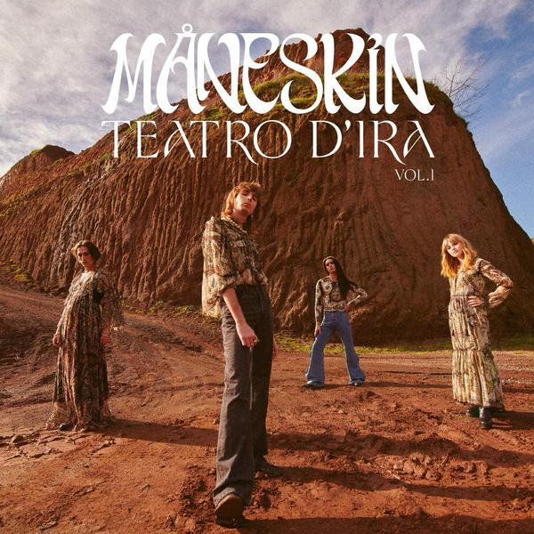

Teatro d'ira - Vol. I
secondo album in studio del gruppo rock italiano Måneskin.
L'album è stato pubblicato il 19 marzo 2021 e ha raggiunto la
posizione numero uno nella classifica degli album italiani,
ricevendo la certificazione di platino dalla FIMI.
Comprende i singoli "Vent'anni" e la canzone "Zitti e buoni",
che ha vinto Sanremo e l'Eurovision.